| データ解析のための統計モデリング入門 |
| データ解析のための統計モデリング入門 |
「最大対数尤度 モデルの良さ」か？（そうではない。）
最大対数尤度を  として、
として、
| 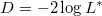 |
逸脱度は、フルモデルを当てはめた時に最小値、ゼロモデルを当てはめたときに最大値をとる。 そこで、フルモデルの逸脱度を基準として、
残差逸脱度（residual deviance） 逸脱度 フルモデルの逸脱度
ゼロ逸脱度（null deviance） ゼロモデルの逸脱度 フルモデルの逸脱度
と定義する。 Rの glm() では、これら2つが報告される。
残差逸脱度は、パラメータ数 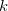 さえ増やせばどんどん小さくなる（あてはまりが良くなる）。
当てはまりの良さではなく、予測の良さを重視する。
最大対数尤度を 、最尤推定したパラメータ数を とすると、
| 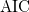 | 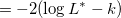 | (4.5) | ||
 |
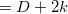 | (4.6) |
で定義される。
最大対数尤度は、推定された統計モデルがたまたま得られた観測データにどれくらい当てはまっているかを表す量。
今、真の統計モデル（パラメータ  ）から大きさ
）から大きさ  の標本が得られ、
の標本が得られ、
パラメータの推定値 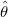
最大対数尤度
が得られているとする。 仮に同じ手続きで大きさ の標本が多数回抽出され、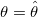 とした時の尤度を算出し、その平均（平均対数尤度：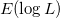）を取ることができたとする。 このとき、最大対数尤度と平均対数尤度の差（バイアス）
| 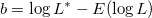 | (4.7) |
すると、データから計算された最大対数尤度とパラメータ数を用いて、平均対数尤度を
| 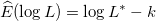 | (4.8) |
と推定できる3。 これをバイアス補正と呼ぶ。
つまり、
| 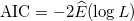 | (4.9) |
ということ。
ここで、パラメータ数 のモデルに 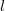 個のパラメータを追加したモデルを当てはめることを考える。 このとき、バイアスの期待値は
| 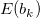 |  |
(4.10) | ||
 |
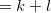 | (4.11) |
となる。 つまり、パラメータを 個追加することで、最大対数尤度と平均対数尤度の差は、平均で 増加する。
また、AICは
| 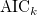 | 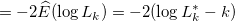 | (4.12) | ||
| 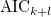 | 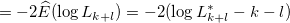 | (4.13) |
なので、
| 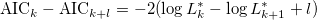 | (4.14) |
より 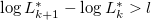 なら 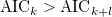 となる。 つまり、パラメータを 加えることによる最大対数尤度の増分が を上回るのであれば、AICは小さくなる。
Footnotes
を算出するために用いた当初データの標本変動によって左右される。| データ解析のための統計モデリング入門 |